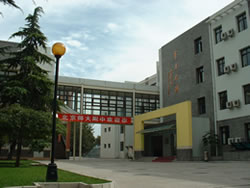

北京师范大学附属中学，简称北京师大附中，是教育部直属北京师范大学的第一附中，北京首批市级重点中学、北京市首批示范性高中校。北京师大附中始建于1901年，是我国成立最早的公立中学，是我国最著名的中学之一，在海内外享有盛誉。
学校规模
师大附中位于北京市中心区-宣武区和平门南新华街，毗邻天安门广场和琉璃厂文化区，交通十分便利。目前，学校占地面积43877平方米，总建筑面积48078平方米；学校现有建筑为：教学楼、综合实验楼、学生宿舍楼、研修楼、百年附中会堂、运动场等。学校现有高中36个教学班，初中22个教学班，在校学生2453人；外国留学生107人。学校现有在职教职工245人，其中教师221人；在职教师中具有高级职称的82人，具有中级职称的97人。市区级学科带头人27人，市区级骨干教师40人；教师中博士研究生1人，硕士研究生67人，研究生班结业70人。在职和离退休特级教师17人，目前8人任课或指导青年教师。
办学宗旨
师大附中的办学目标：国内一流，国际先进。
师大附中的办学思想：五育并举、全面发展。
师大附中的培养目标：培养科学素质、人文素质高；
具有创新精神和实践能力的栋梁之材。
高中毕业时有能力和自信心面对高考,
并考取理想的大学。
师大附中的校训：诚、爱、勤、勇
师大附中的办学思想：五育并举、全面发展。
师大附中的培养目标：培养科学素质、人文素质高；
具有创新精神和实践能力的栋梁之材。
高中毕业时有能力和自信心面对高考,
并考取理想的大学。
师大附中的校训：诚、爱、勤、勇

学校特色
师大附中始终站在我国教育改革的前列，在学制、课程、教材研究和实验等方面不断探索，积累了厚实的教育教学理论和实践基础。师大附中对教师的要求高，名师多，注意培养学生多方面的能力。学校开办了培养拔尖人才的理科实验班、外语实验班，授课均由各科一流教师担任。外语教学突出是师大附中的一个特色。学校有步骤地发展学生特长，注重提高学生的能力，积极参加各项竞赛，并取得优异成绩；选择教师要求高，教师基本来自名牌大学，有深厚的功底。目前达到研究生水平的教师近百人，30位教师从国外学习、工作归来。
师大附中教师的特点：师德高尚、学识渊博、理念先进、治学严谨、教书育人。
师大附中教学的特点：起点高，方法活，要求严，学生能力强，负担不太重。
获得荣誉
建校一百年来，北京师大附中为国家输送了大批优秀人才。历届校友中，著名专家学者和各界知名人士数百人，仅中国科学院院士和工程院院土就有30多位。著名革命家赵世炎、科学家钱学森就是师大附中数万学子的杰出代表。建国以来，师大附中得到了党和国家的高度重视和亲切关怀。毛泽东、邓小平、江泽民等党和国家领导人曾为师大附中题词，胡锦涛同志多次接见师大附中师生。
每年国际国内众多来宾来校参观，对师大附中深厚的文化底蕴、扎实的工作作风、鲜明的办学特色，以及优秀历史传统与现代化的有机结合，留下深刻的印象并给予高度的赞扬。在北京市首批示范校评定中，北京师大附中名列前茅。